概率论
阶段: 基础(6月) + 强化(8月) | 覆盖课件 12 份: 0620（1）、0620（2）、0620（3）、0621（1）、0621（2）、0621（3）、0801（1）、0801（2）、0801（3）、0802（1）、0802（2）、0802（3） 📖 例题全量见: 概率论 · 例题集
板块总览
概率论研究随机现象的统计规律, 核心主线是一条链: 随机试验 → 样本空间 → 随机事件(集合) → 概率(测度) → 随机变量(函数) → 分布(完整描述) → 数字特征(概要描述)
不同于微积分和线代的"确定性", 概率论引入不确定性: 我们不再问"是什么", 而问"有多大可能"。把握这条主线后, 公式和分布自然串起来。
本板块按 事件与概率 → 一维随机变量 → 多维随机变量 → 随机变量函数的分布 组织。
一、随机事件与概率
1.1 样本空间与随机事件 必考
核心定义
随机试验 E 的三个特点: 可重复、结果已知但不确定、事先明确所有可能结果。
- 样本空间 Ω: 随机试验所有可能结果的集合。样本点 ω 是 Ω 的元素。
- 随机事件 A: Ω 的子集。事件发生 = 试验结果落在该子集中。
- 基本事件: 单点集 {ω}。复合事件: 多点集。必然事件 Ω, 不可能事件 ∅。
直觉 事件就是 Ω 上的一组结果。比如掷骰子, Ω={1,2,3,4,5,6}, "点数为偶数"={2,4,6}——就是我们圈出的一个子集。概率论本质上是在样本空间上分配"大小", 这个大小就是概率。
1.2 事件的关系与运算 必考
把事件当集合看, 全部运算就是集合运算的翻版:
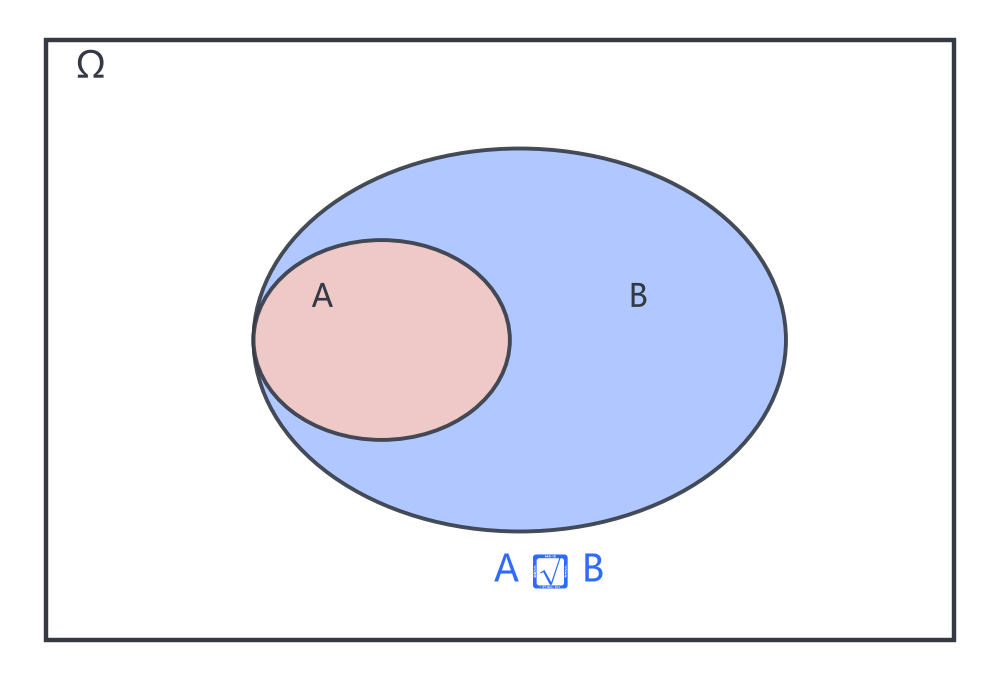
📐 示意图
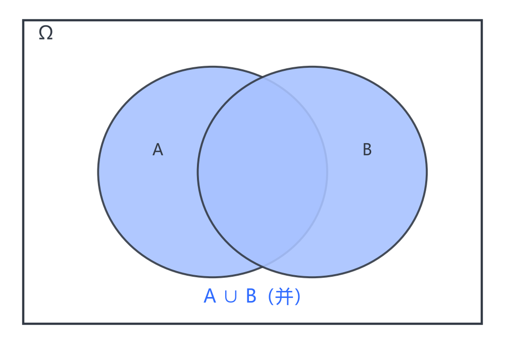
📐 示意图
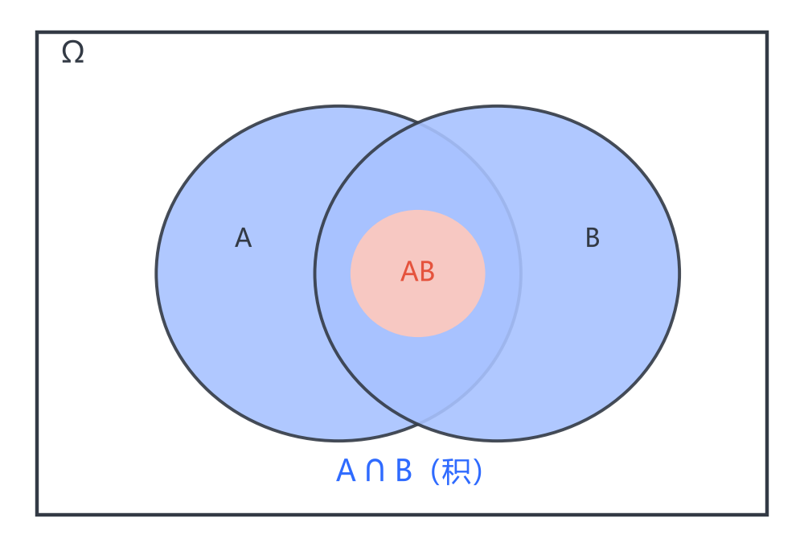
📐 示意图
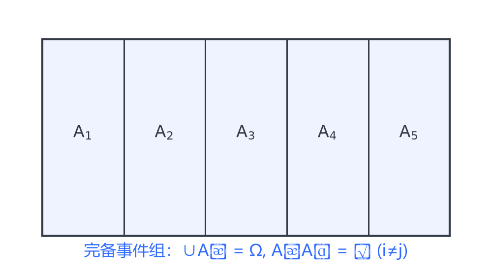
📐 示意图
| 关系/运算 | 符号 | 含义 |
|---|---|---|
| 包含 | A⊂B | A 发生 ⇒ B 发生 |
| 相等 | A=B | A⊂B 且 B⊂A |
| 和事件 | A∪B | A, B 至少一个发生 |
| 积事件 | A∩B (AB) | A, B 同时发生 |
| 差事件 | A−B | A 发生且 B 不发生 |
| 互斥 | AB=∅ | A, B 不能同时发生 |
| 对立 | A∪B=Ω 且 AB=∅ | 必有一个发生且仅一个发生。Ā = Ω\A |
| 完备事件组 | ∪Aᵢ=Ω, AᵢAⱼ=∅(i≠j) | 分割样本空间, 全概率公式的基础 |
运算律(核心: 德摩根律) 高频 $$ \overline{A\cup B} = \bar{A}\cap\bar{B},\qquad \overline{A\cap B} = \bar{A}\cup\bar{B} $$
直觉记忆 "长杠变短杠, 开口换方向"——取反后, 并把 ∪ 换成 ∩, ∩ 换成 ∪。
易错点 易错 "A,B 至少一个发生" = A∪B; "A,B 至多一个发生" = 不同时发生 = \overline{AB} = Ā∪B̄ (恰有一个发生或都不发生)。
1.3 概率的公理化定义 必考
三条公理 对 Ω 上的每个事件 A, 赋予实数 P(A):
- 非负性: P(A) ≥ 0
- 规范性: P(Ω) = 1
- 可列可加性: 若 A₁, A₂, … 两两互斥, 则 P(∪Aᵢ) = ΣP(Aᵢ)
直觉 概率是把样本空间 Ω 的"总测度 1"分配到各个事件上。公理化定义不限定具体怎么分配——古典概型、几何概型、任何分布都是满足这三条的特例。
注意 P(A)=0 推不出 A=∅ (不可能事件), 只是说 A 发生的概率为零(如连续型 R.V. 单点概率); P(A)=1 也推不出 A=Ω。
1.4 概率的基本性质 高频
 📐 示意图
📐 示意图
- 逆事件: P(Ā) = 1−P(A) —— "至少一个发生" ↔ 1−"全都不发生"
- 可比性: A⊂B ⇒ P(A) ≤ P(B)
- 加法公式: P(A∪B) = P(A) + P(B) − P(AB)
- 三事件: P(A∪B∪C) = P 【AI补全】
- 减法公式: P(A−B) = P(A) − P(AB) = P(A\B̄) — 即 A 发生而 B 不发生
注意 P(A∪B) ≤ P(A)+P(B) (容斥下界); P(AB) ≤ P(A), P(AB) ≤ P(B) (积事件概率 ≤ 各自概率)。
1.5 条件概率 必考
定义 若 P(A) > 0: $$ P(B|A) = \frac{P(AB)}{P(A)} $$
直觉 把样本空间从 Ω 缩小到 A, 重新归一化——原来 A 中的各样本点按比例放大了 1/P(A) 倍。条件概率 = 在"得知 A 发生"这一新信息后, 对 B 发生可能性的重新评估。
性质
- 0 ≤ P(B|A) ≤ 1, P(Ω|A) = 1
- P(B̄|A) = 1−P(B|A) (条件概率也是概率, 满足概率的三条公理)
- 乘法公式: P(AB) = P(B|A)·P(A) (当 P(A)>0); 推广: P(ABC) = P(C|AB)·P(B|A)·P(A)
1.6 事件的独立性 必考易错
定义 A, B 独立 ⇔ P(AB) = P(A)·P(B)
直觉 独立 = B 的发生不改变 A 发生的概率。等价表述: 当 0<P(A)<1 时, $$ P(B|A) = P(B) = P(B|\bar{A}) $$ 即"知不知道 A 发生了, B 的概率都一样"。
重点独立与互斥的区别:
- 互斥(AB=∅): "不能同时发生" —— 若 A 发生则 B 必不发生, 所以 P(B|A)=0
- 独立(AB 的概率可拆分): "互不影响" —— P(B|A)=P(B)
- 若 P(A)>0, P(B)>0: 互斥 ⇒ 不独立 (因为 P(B|A)=0≠P(B))
性质: A 与 B 独立 ⇒ Ā 与 B、A 与 B̄、Ā 与 B̄ 全部独立 ("一推三")。
三个事件的独立 易错
- 两两独立: P(AB)=P(A)P(B), P(AC)=P(A)P(C), P(BC)=P(B)P(C)
- 相互独立: 两两独立 + P(ABC)=P
- 两两独立 ⇏ 相互独立(反例: 掷两枚硬币, 取 A={第一枚正面}, B={第二枚正面}, C={两枚同面}——两两独立但不相互独立)
1.7 五大概率公式 必考
公式一览:
(1) 加法公式: P(A∪B) = P(A)+P(B)−P(AB)
(2) 减法公式: P(A−B) = P(A)−P(AB) = P(A\B̄)
(3) 乘法公式(链式法则): P(AB) = P(A)·P(B|A) = P(B)·P(A|B)
(4) 全概率公式(由因导果): 若 A₁,…,Aₙ 为完备事件组, P(Aᵢ)>0, 则 $$ P(B) = \sum_{i=1}^{n} P(A_i)P(B|A_i) $$
直觉 把 B 按"原因 Aᵢ"切分成 n 块, 分别求概率再加总。解题思路: "要想 B 发生, 有哪些互斥的途径?"
(5) 贝叶斯公式(执果索因): 若 A₁,…,Aₙ 为完备事件组, P(B)>0, 则 $$ P(A_j|B) = \frac{P(A_j)P(B|A_j)}{\sum_{i=1}^{n} P(A_i)P(B|A_i)} $$
直觉 P(Aⱼ) 是先验概率(在知道 B 之前对 Aⱼ 的信念), P(Aⱼ|B) 是后验概率(观察到 B 后更新的信念)。贝叶斯公式 = 用证据 B 来更新概率。
注意 全概率的分母也是全概率, 贝叶斯的分母就是全概率。
1.8 三大经典概型 必考
1. 古典概型 (有限等可能) $$ P(A) = \frac{|A|}{|\Omega|} = \frac{\text{A 包含的样本点数}}{\text{样本空间样本点总数}} $$ 条件: Ω 有限 + 每个样本点等可能。使用技巧: 排列组合(有序/无序, 放回/不放回)。
2. 几何概型 (无限等可能) $$ P(A) = \frac{m(A)}{m(\Omega)} = \frac{\text{A 的测度(长度/面积/体积)}}{\Omega \text{ 的测度}} $$ 条件: Ω 为区间/区域/空间体, 等可能 = 落在等测度子区域的概率相等。 典型题: 会面问题 —— 两人约定时间见面, 等 15 分钟, 求能见面的概率 → 画正方形区域, 满足 |x−y|≤15 的带状区域面积占比。
3. 伯努利概型 (n 重独立重复) n 重伯努利试验中, 每次事件 A 发生概率为 p, 则 A 恰好发生 k 次的概率: $$ P_k = C_n^k p^k (1-p)^{n-k}, \quad k=0,1,\ldots,n $$ 识别特征: n 次独立重复、每次只有 A/Ā 两个结果、每次 p 相同。
二、一维随机变量及其分布
2.1 随机变量的定义 必考
定义 随机变量 X = X(ω) 是定义在样本空间 Ω 上的实值函数: 对每个样本点 ω, 赋予一个实数。
直觉 为什么需要随机变量? 因为"事件"是啰嗦的文字(如"掷骰子点数为偶数"), 随机变量把它变成数字(如 X≥3), 从而可以用函数、微积分等数学工具。
分类: 离散型(取值有限/可列)、连续型(取值充满区间)、既非离散也非连续型。
2.2 分布函数 必考高频
定义 F(x) = P{X ≤ x}, −∞<x<+∞。分布函数完整描述了随机变量的概率特征。
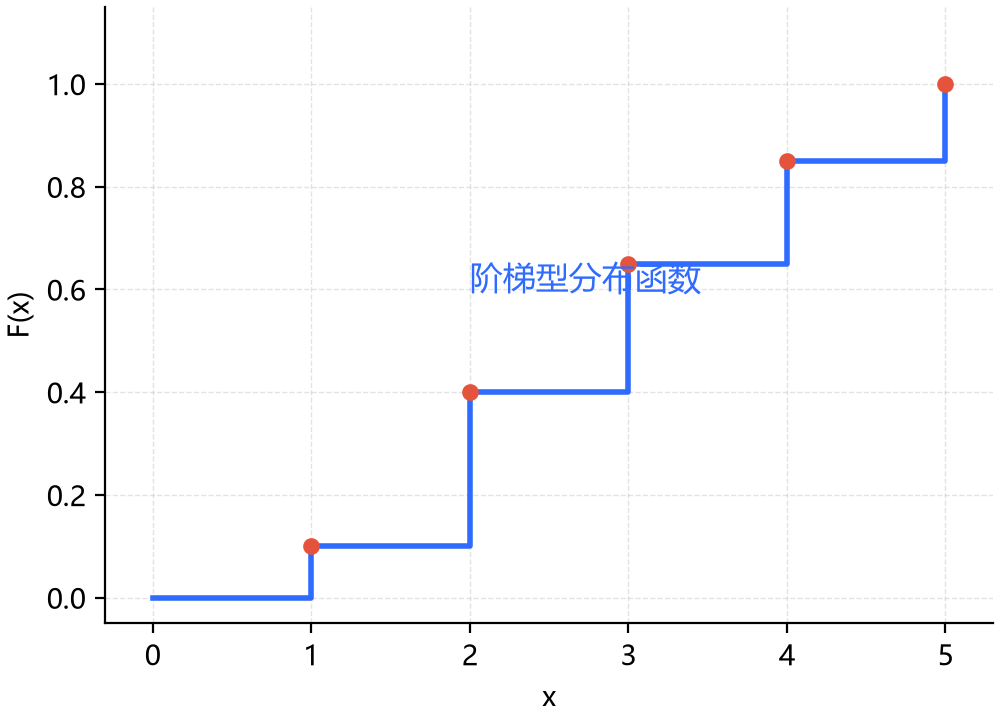
📐 示意图
成为分布函数的充要条件(四个): a. 非负规范性: 0 ≤ F(x) ≤ 1, F(−∞)=0, F(+∞)=1 b. 单调不减: x₁<x₂ ⇒ F(x₁) ≤ F(x₂) c. 右连续: F(x+0)=F(x) d. (隐含)极限存在
利用分布函数求概率(等号跟着大于号):
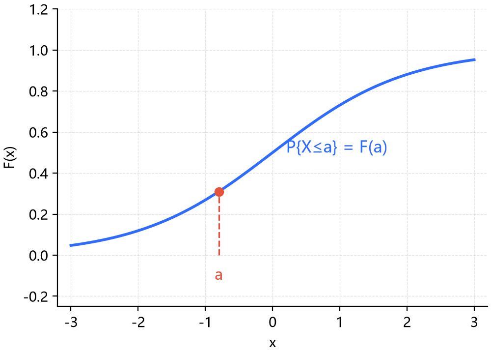
📐 示意图
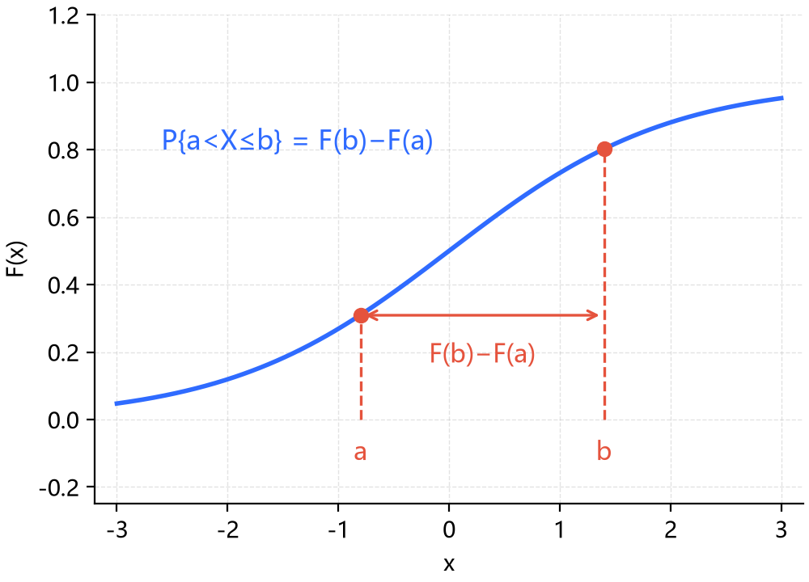
📐 示意图
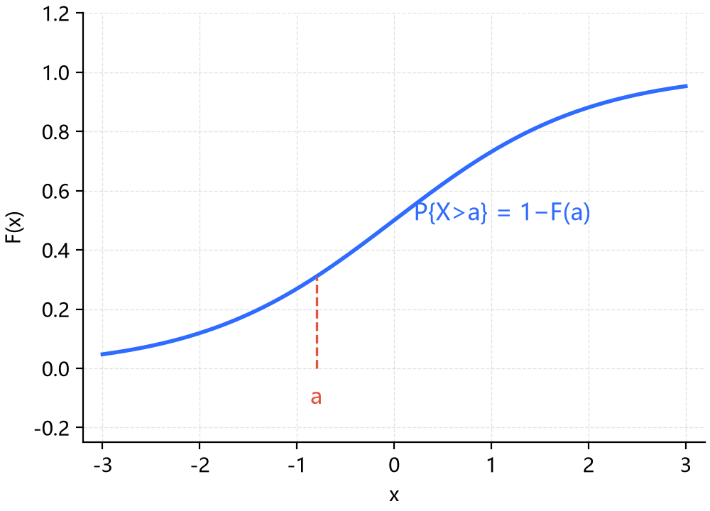
📐 示意图
- P{X < a} = F(a−0) (左极限)
- P{X ≤ a} = F(a)
- P{X > a} = 1−F(a)
- P{X ≥ a} = 1−F(a−0)
- P{a < X ≤ b} = F(b)−F(a)
- P{X = a} = F(a)−F(a−0) (分布函数的跳跃 = 该点的概率质量)
注意 对于连续型 R.V., F(x) 处处连续, 所以 P{X=a}=0 (等号有无不影响概率)。
2.3 离散型随机变量 必考
分布律(概率质量函数): P{X = xₖ} = pₖ, k=1,2,…, 满足 pₖ≥0, Σpₖ=1。
分布律可用表格表示:
| X | x₁ | x₂ | … | xₖ | … |
|---|---|---|---|---|---|
| P | p₁ | p₂ | … | pₖ | … |
分布函数(阶梯函数): F(x) = Σ_{xₖ<x} pₖ
直觉 离散型 R.V. 的概率是"一堆点上的质量", 分布函数是逐点累加。
2.4 连续型随机变量 必考
概率密度函数 f(x): 满足 f(x) ≥ 0, ∫_{−∞}^{+∞} f(x)dx = 1。
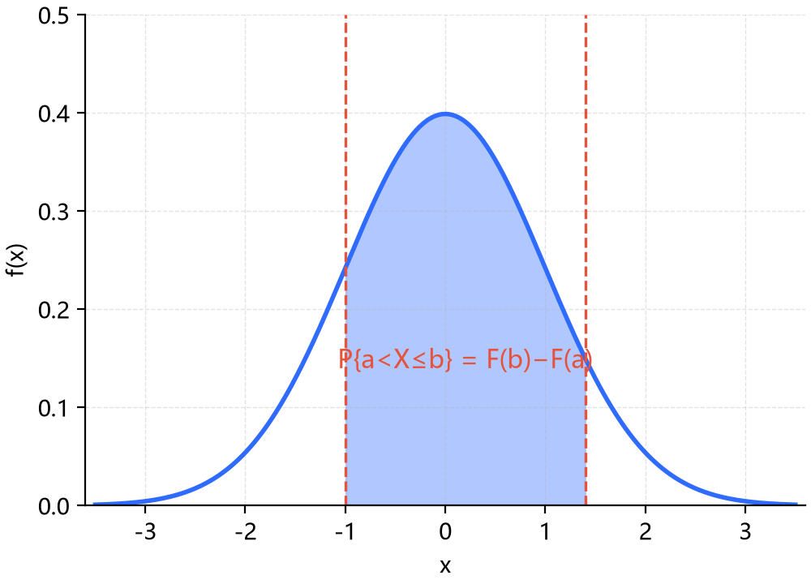
📐 示意图
分布函数: F(x) = ∫_{−∞}^{x} f(t)dt, 且 F'(x) = f(x) (在 f 连续的点处)。
核心性质:
- P{a < X < b} = ∫ₐᵇ f(x)dx = F(b)−F(a) — 概率 = 曲线下面积
- P{X = a} = 0 (单点概率为零, 等号可有可无)
- 连续型 R.V. 的 F(x) 是连续函数
直觉 连续型 R.V. 把概率 1 "摊薄"到整个区间上, 密度 f(x) 表示 x 附近单位长度上的概率质量。单点厚度为零, 所以概率为零。这与离散型截然不同。
2.5 八大常见分布 必考
(1) 0-1 分布 B(1,p) 【基础】
$$ P\{X=k\} = p^k(1-p)^{1-k}, \quad k=0,1 $$ 描述只有成功/失败两种结果的单次试验。是二项分布 n=1 的特例。
(2) 二项分布 B(n,p) 必考
$$ P\{X=k\} = C_n^k p^k (1-p)^{n-k}, \quad k=0,1,\ldots,n $$ n 重伯努利试验中成功的次数。X₁~B(n₁,p), X₂~B(n₂,p) 独立 ⇒ X₁+X₂~B(n₁+n₂,p)(可加性)。
直觉 n 次射击, 每次命中概率 p, 命中次数 X~B(n,p)。
(3) 泊松分布 P(λ) 高频
$$ P\{X=k\} = \frac{\lambda^k e^{-\lambda}}{k!}, \quad k=0,1,2,\ldots \quad (\lambda>0) $$
泊松定理: 若 npₙ → λ (n→∞), 则二项分布 → 泊松分布: $$ \lim_{n\to\infty} C_n^k p_n^k (1-p_n)^{n-k} = \frac{\lambda^k e^{-\lambda}}{k!} $$
应用场景: "小概率事件在大量重复中的发生次数"——车流量、事故数、电话呼叫数等。条件是 n 大 p 小, λ=np 适中。
(4) 几何分布 G(p) 高频
$$ P\{X=k\} = (1-p)^{k-1}p, \quad k=1,2,\ldots $$ 首次成功所需的试验次数。无记忆性: P{X>m+n | X>m} = P{X>n}。
直觉 "一直失败直到成功"——每次失败概率 (1−p), 前 k−1 次全失败, 第 k 次成功。
(5) 超几何分布 H(n,M,N) 【了解】
$$ P\{X=k\} = \frac{C_M^k C_{N-M}^{n-k}}{C_N^n} $$ N 件产品中 M 件次品, 不放回抽 n 件, 次品数 X 的分布。当 N 很大时可用二项分布近似。
(6) 均匀分布 U(a,b) 必考
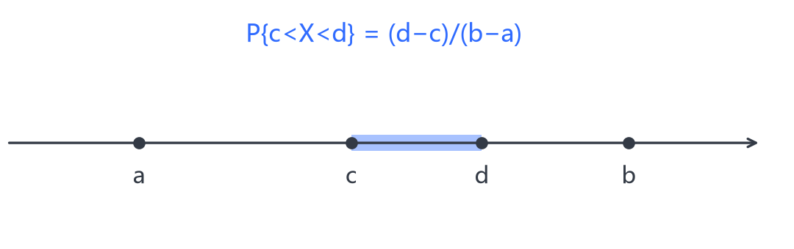
📐 示意图
$$ f(x) = \begin{cases} \frac{1}{b-a}, & a<x<b \\ 0, & \text{其他} \end{cases} $$ $$ F(x) = \begin{cases} 0, & x<a \\ \frac{x-a}{b-a}, & a\leq x<b \\ 1, & x\geq b \end{cases} $$
直觉 [a,b] 上的等可能性: 落在任一子区间的概率只取决于子区间的长度, 与位置无关。
(7) 指数分布 E(λ) 必考
$$ f(x) = \begin{cases} \lambda e^{-\lambda x}, & x>0 \\ 0, & x\leq0 \end{cases} $$ $$ F(x) = \begin{cases} 1-e^{-\lambda x}, & x\geq0 \\ 0, & x<0 \end{cases} $$
重点无记忆性: P{X > s+t | X > s} = P{X > t} = e^{−λt}。这是指数分布独有的性质(连续型中), 用于描述"寿命": 已经活了 s 小时, 再活 t 小时的概率等于从头再活 t 小时的概率。
应用: 电子元件寿命、等待时间、排队论。
(8) 正态分布 N(μ,σ²) 必考高频
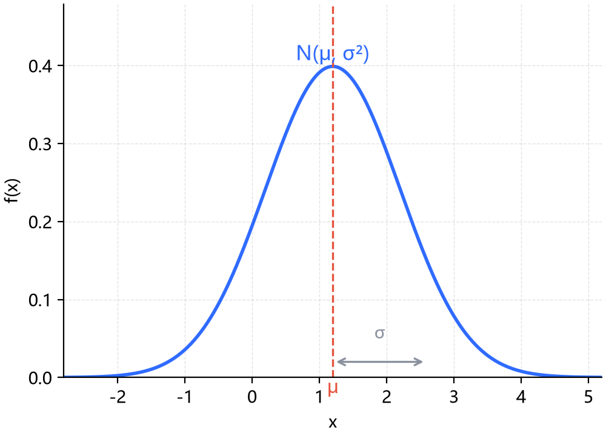
📐 示意图
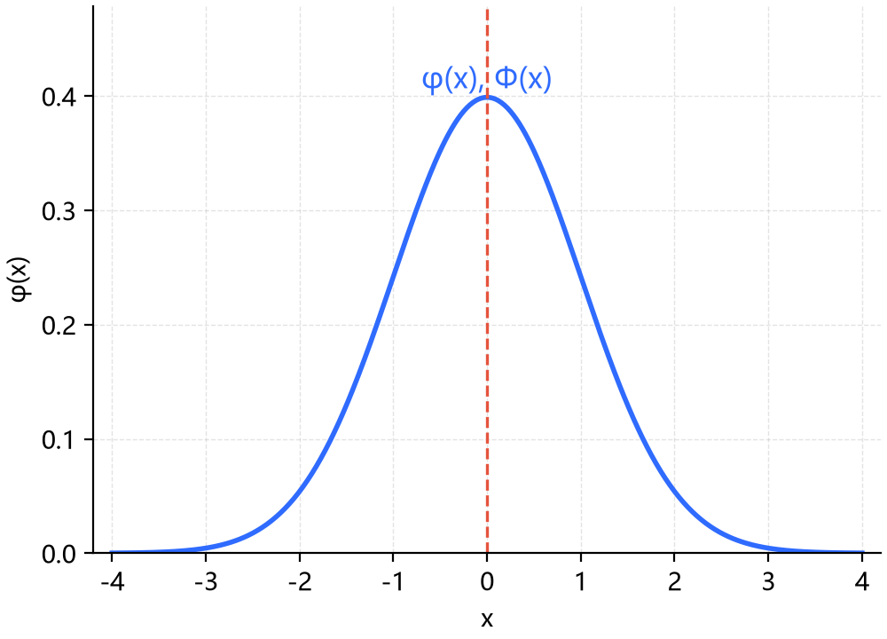
📐 示意图
概率密度: $$ f(x) = \frac{1}{\sqrt{2\pi}\sigma} e^{-\frac{(x-\mu)^2}{2\sigma^2}}, \quad -\infty<x<+\infty $$
标准正态分布 N(0,1): μ=0, σ=1, 密度记为 φ(x), 分布函数记为 Φ(x)。
标准化: 若 X~N(μ,σ²), 则 Z = (X−μ)/σ ~ N(0,1) $$ P\{X \leq a\} = \Phi\!\left(\frac{a-\mu}{\sigma}\right) $$
性质:
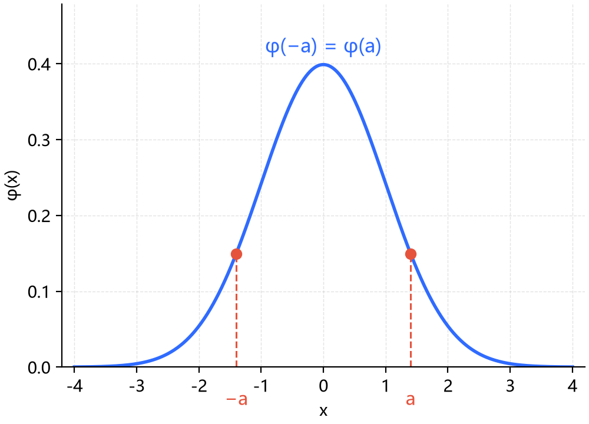
📐 示意图
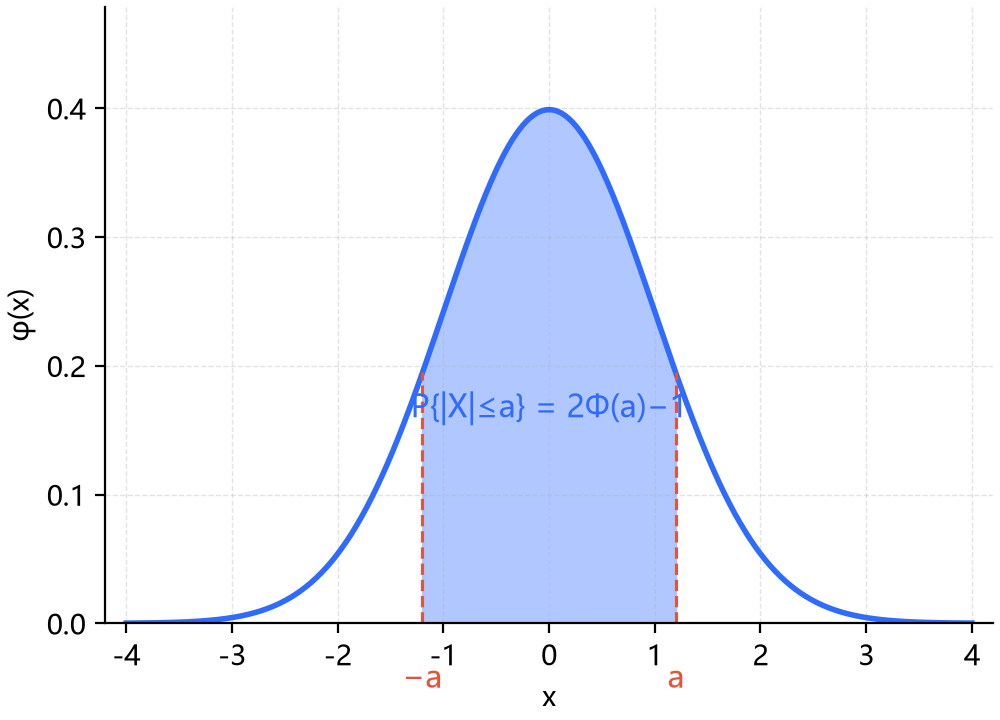
📐 示意图
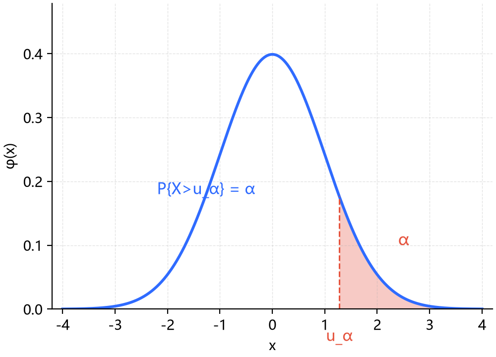
📐 示意图
- φ(x) 关于 y 轴对称: φ(−x) = φ(x)
- Φ(−x) = 1−Φ(x)
- Φ(0) = 1/2
- P{|X| < a} = 2Φ(a)−1 (a≥0)
- 上 α 分位点 u_α: P{X > u_α} = α, 则 Φ(u_α) = 1−α
直觉 正态分布是自然界的"默认分布"——中心极限定理保证大量独立微小因素叠加的结果近似正态。μ 控制位置(峰值), σ 控制宽度(分散程度)。标准化 = 把所有正态分布拉到同一尺度 N(0,1) 上比较。
易错 查表时注意: Φ(−a) = 1−Φ(a); P{X > a} = 1−Φ(a)。
三、随机变量函数的分布 高频
已知 X 的分布, 求 Y = g(X) 的分布。
3.1 离散型 → 离散型
将 X 的取值代入 g, 合并相同的 Y 值, 对应概率相加。
3.2 连续型 → 连续型 重点
方法一: 分布函数法(通用方法, 推荐)
- 写出 F_Y(y) = P{Y ≤ y} = P{g(X) ≤ y}
- 将事件 {g(X) ≤ y} 转化为关于 X 的不等式, 用 f_X(x) 的积分表示
- 对 y 求导得 f_Y(y) = F'_Y(y)
方法二: 公式法(适用于 g 严格单调) 若 y=g(x) 严格单调, 反函数 x=h(y), 则: $$ f_Y(y) = f_X(h(y)) \cdot |h'(y)| $$
典型变换:
- Y = aX+b: f_Y(y) = (1/|a|)·f_X((y−b)/a)
- Y = X²: 分 y<0 和 y≥0 讨论; y≥0 时 F_Y(y)=P{−√y ≤ X ≤ √y}
四、多维随机变量及其分布
4.1 联合分布函数 必考
定义 F(x,y) = P{X ≤ x, Y ≤ y}
性质: 非负有界(0~1); 关于 x 和 y 分别单调不减、右连续; F(−∞,y)=0, F(x,−∞)=0, F(+∞,+∞)=1。
边缘分布函数: $$ F_X(x) = \lim_{y\to+\infty} F(x,y), \quad F_Y(y) = \lim_{x\to+\infty} F(x,y) $$
独立性: X 与 Y 独立 ⇔ F(x,y) = F_X(x)·F_Y(y), ∀x,y。
4.2 二维离散型 必考
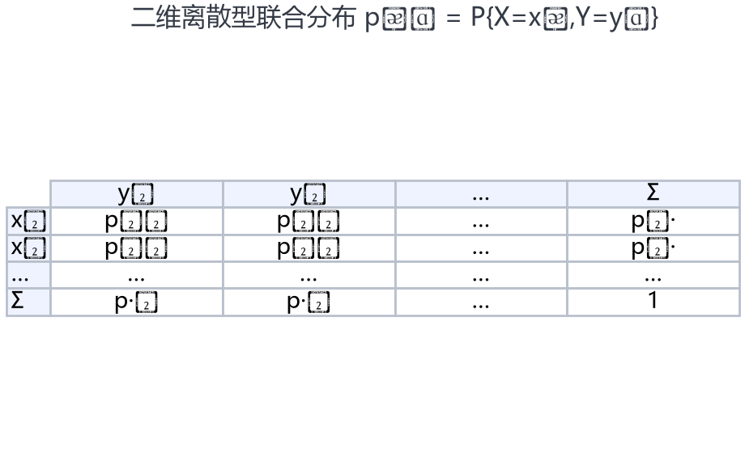
📐 示意图
联合分布律: P{X=xᵢ, Y=yⱼ} = pᵢⱼ, pᵢⱼ≥0, ΣᵢΣⱼ pᵢⱼ=1。
边缘分布律: X 的边缘: pᵢ· = Σⱼ pᵢⱼ; Y 的边缘: p·ⱼ = Σᵢ pᵢⱼ。
条件分布律: P{X=xᵢ | Y=yⱼ} = pᵢⱼ / p·ⱼ (当 p·ⱼ > 0)
独立性充要条件: pᵢⱼ = pᵢ··p·ⱼ, ∀i,j (每个格子概率 = 对应行列乘积)
4.3 二维连续型 必考高频
 📐 示意图
📐 示意图
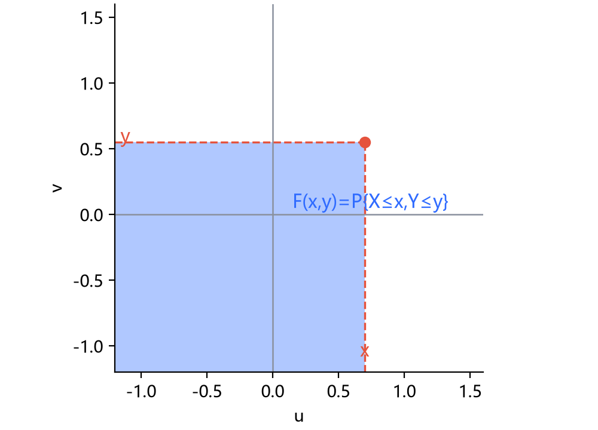
📐 示意图
联合概率密度 f(x,y): f(x,y) ≥ 0, ∫∫_{R²} f(x,y)dxdy = 1。
$$ P\{(X,Y)\in D\} = \iint_D f(x,y)\,dxdy $$
边缘概率密度:
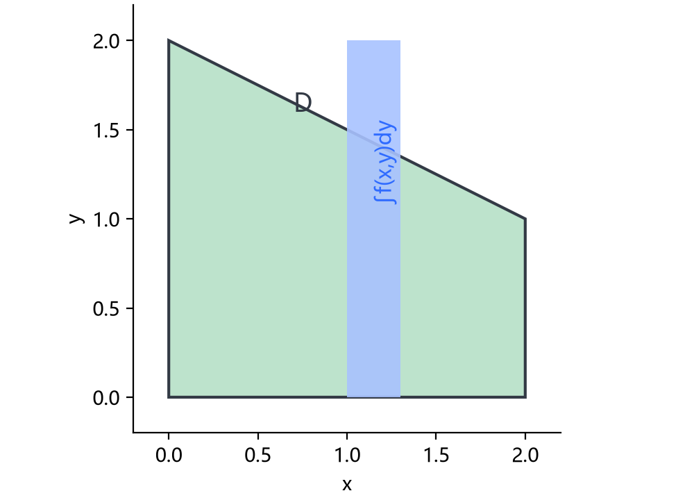
📐 示意图
$$ f_X(x) = \int_{-\infty}^{+\infty} f(x,y)\,dy, \quad f_Y(y) = \int_{-\infty}^{+\infty} f(x,y)\,dx $$
条件概率密度: $$ f_{X|Y}(x|y) = \frac{f(x,y)}{f_Y(y)} \quad (f_Y(y)>0), \qquad f_{Y|X}(y|x) = \frac{f(x,y)}{f_X(x)} \quad (f_X(x)>0) $$
独立性充要条件: f(x,y) = f_X(x)·f_Y(y), ∀x,y。
直觉 二维与一维的类比——把"线段上的积分"升级为"平面区域上的二重积分"。独立性 = 联合密度能分解成两个一元密度的乘积——就像两个独立的人各自做决策, 联合行为等于各自行为的乘积。
4.4 二维正态分布 高频
若 (X,Y) 服从二维正态分布, 则:
- X 和 Y 的边缘分布都是一维正态
- X 与 Y 独立 ⇔ 相关系数 ρ = 0 (正态分布独有的性质: 不相关 = 独立)
- X 和 Y 的线性组合 aX+bY 仍服从正态分布
- 条件分布 f_{Y|X}(y|x) 也是正态分布
易错 两个一维正态的联合不一定是二维正态; 只有二维正态才有"ρ=0 ⇔ 独立"这个好性质。
4.5 二维随机变量函数的分布 必考
目标 已知 (X,Y) 的联合分布, 求 $Z=g(X,Y)$ 的分布。
(1) 离散型: 分层卷积(全概率展开) $$ P\{Z=z\}=\sum_{x_i} P\{X=x_i\}\cdot P\{g(x_i,Y)=z\,|\,X=x_i\} $$ 按 $X$ 的取值分层, 每层内对 Y 求和。混合型(离散×连续)也一样: 先按离散变量取值分层, 每层对连续变量积分。
(2) 连续型: 分布函数法(通用套路) $$ F_Z(z)=P\{g(X,Y)\le z\}=\iint_{g(x,y)\le z} f(x,y)\,dxdy $$ 先在 $xy$ 平面上画出 $g(x,y)\le z$ 的区域再积分; 最后 $f_Z(z)=F_Z'(z)$。
(3) 和分布 Z=X+Y: 卷积公式(必背) $$ f_Z(z)=\int_{-\infty}^{+\infty} f_X(x)\,f_Y(z-x)\,dx \quad\text{(X,Y 独立时)} $$ 积分上下限由两密度支撑的交集确定——先定支撑再写上下限, 别一上来就写 $\pm\infty$。
(4) 商/积分布: 变量替换法 设 $Z=XY$ 或 $Z=X/Y$: 令 $u=g(x,y)$ 取一个(如 $u=xy$), 再令 $v=x$, 由雅可比变换求 (U,V) 联合密度, 再对 v 积分: $$ f_{U}(u)=\int f_{X,Y}\left(v,\frac{u}{v}\right)\left|\frac{\partial(x,y)}{\partial(u,v)}\right|dv $$
直觉 三种方法同一件事: 把"Z 的概率"翻译成"(X,Y) 落在某区域"的概率。分布函数法最通用, 卷积公式是和分布的专用捷径, 变量替换法适合积/商。
极值分布(独立同分布样本的 min/max) 高频 $$ F_{\max}(x)=[F(x)]^n,\qquad F_{\min}(x)=1-[1-F(x)]^n $$ 直觉 max ≤ x ⟺ 全部 ≤ x; min > x ⟺ 全部 > x——"都"字翻译成连乘。指数族特例: $X_i\sim E(\lambda)$ 时 $\min\{X_i\}\sim E(n\lambda)$(参数相加, 例18.8); max 的密度 = $n[F(x)]^{n-1}f(x)$(逐项求导)。电路串联=min、并联=max 是常见应用模型。
【来源: 0803（1）】
五、随机变量的数字特征 必考
5.1 数学期望 必考
定义 离散: $E(X)=\sum_i x_i p_i$; 连续: $E(X)=\int_{-\infty}^{+\infty}x f(x)\,dx$ (要求绝对收敛)
直觉 期望 = 概率加权平均, 是分布的"重心"。离散情形就是杠杆平衡点: 每个取值 $x_i$ 挂质量 $p_i$, 期望是使杠杆平衡的位置。
性质(全为线性运算, 无需独立): $$ E(C)=C,\quad E(aX+b)=aE(X)+b,\quad E(X\pm Y)=E(X)\pm E(Y) $$ 独立时: $E(XY)=E(X)E(Y)$ (不独立则一般不等)
随机变量函数的期望 不必先求 $g(X)$ 的分布: $$ E[g(X)]=\sum_i g(x_i)p_i \quad\text{或}\quad \int g(x)f(x)\,dx $$ 二维: $E[g(X,Y)]=\sum\sum g(x_i,y_j)p_{ij}$ 或 $\int\!\!\int g(x,y)f(x,y)\,dxdy$
易错点 易错 $E(X^2)\ne[E(X)]^2$——平方期望多算的是"分散程度"; $E(1/X)\ne 1/E(X)$, 非线性函数不能直接"代进去"。
5.2 方差 必考
定义 $D(X)=E\{[X-E(X)]^2\}$, 标准差 $\sigma=\sqrt{D(X)}$
计算公式 $D(X)=E(X^2)-[E(X)]^2$ 高频——二阶原点矩减均值平方, 考试主用这个。
性质: $$ D(C)=0,\quad D(aX+b)=a^2D(X),\quad D(X\pm Y)=D(X)+D(Y)\pm 2\text{Cov}(X,Y) $$ 独立时: $D(X\pm Y)=D(X)+D(Y)$ (协方差项消失)
直觉 方差 = 偏离中心程度的平均。$a^2$ 系数说明: 尺度放大 $a$ 倍, 离散程度放大 $a^2$ 倍; 平移不影响方差。
5.3 协方差与相关系数 必考
协方差定义 $\text{Cov}(X,Y)=E\{[X-E(X)][Y-E(Y)]\}=E(XY)-E(X)E(Y)$
性质 $\text{Cov}(X,X)=D(X)$; $\text{Cov}(aX+b,cY+d)=ac\,\text{Cov}(X,Y)$; $\text{Cov}(X,Y+Z)=\text{Cov}(X,Y)+\text{Cov}(X,Z)$
相关系数 $\rho_{XY}=\dfrac{\text{Cov}(X,Y)}{\sqrt{D(X)}\sqrt{D(Y)}}\in[-1,1]$
- $|\rho|=1$ ⇔ $P\{Y=aX+b\}=1$ (几乎必然线性相关)
- $\rho=0$ ⇔ X 与 Y 不相关
- 独立 ⇒ 不相关; 不相关 ⇏ 独立 (正态例外: 正态下不相关 ⇔ 独立) 易错
直觉 相关系数 = 标准化后的协方差, 度量"线性相关程度"的强弱与方向; 只衡量线性关系, 非线性关系(如 $Y=X^2$)可能相关系数为 0 但显然相关。
常用分布数字特征速查 必考
| 分布 | E(X) | D(X) |
|---|---|---|
| 0-1 分布 B(1,p) | p | p(1−p) |
| 二项 B(n,p) | np | np(1−p) |
| 泊松 P(λ) | λ | λ |
| 均匀 U(a,b) | (a+b)/2 | (b−a)²/12 |
| 指数 E(λ) | 1/λ | 1/λ² |
| 正态 N(μ,σ²) | μ | σ² |
| 几何 G(p) | 1/p | (1−p)/p² |
| 卡方 χ²(n) | n | 2n |
六、大数定律与中心极限定理 高频
6.1 切比雪夫不等式
$P\{|X-E(X)|\ge\varepsilon\}\le\dfrac{D(X)}{\varepsilon^2}$ —— 距期望超过 ε 的概率被方差控制。只用到期望方差, 不需要分布。
6.2 大数定律
- 伯努利大数定律: 事件频率 $\to$ 概率 (频率稳定性的理论保证)
- 切比雪夫大数定律: 两两不相关且方差一致有界时, 样本均值 $\to$ 数学期望
- 辛钦大数定律: 独立同分布且期望存在, 样本均值 $\to$ 期望
直觉 "平均的结果稳定": 单个随机变量不可预测, 但大量独立同分布的平均几乎必然收敛到期望。
6.3 中心极限定理
- 列维-林德伯格(独立同分布): $X_i$ iid, $E(X)=\mu,\ D(X)=\sigma^2$, 则 $\dfrac{\sum X_i-n\mu}{\sqrt n\,\sigma}\xrightarrow{d} N(0,1)$ —— 大量独立同分布之和的标准化近似标准正态
- 棣莫弗-拉普拉斯: 二项分布 $B(n,p)$ 当 $n$ 大时近似正态 $N(np,\ np(1-p))$
直觉 正态分布的"统治地位"来源于此: 任何"大量独立随机因素叠加"的结果都长成正态。
七、数理统计初步 高频
7.1 总体、样本与统计量
- 总体/样本: 总体分布 F(x), 简单随机样本 $X_1,\dots,X_n$ 独立同分布
- 统计量: 样本均值 $\bar X=\frac1n\sum X_i$; 样本方差 $S^2=\frac1{n-1}\sum(X_i-\bar X)^2$; 样本 k 阶矩
- 经验分布函数 $F_n(x)$: 对任意 x, $E[F_n(x)]=F(x)$, $D[F_n(x)]=\frac{F(x)(1-F(x))}{n}$
7.2 三大抽样分布
- χ²(n): 独立标准正态平方和 $\sum Z_i^2$, $E=n,\ D=2n$; 可加性
- t(n): $Z/\sqrt{W/n}$, $Z\sim N(0,1)$, $W\sim\chi^2(n)$ 独立
- F(m,n): $(\chi^2(m)/m)/(\chi^2(n)/n)$; $F(1,n)=t^2(n)$
7.3 正态总体的抽样分布 必考
补充结论(记住直接用):
- 正态绝对偏差: $E|X-\mu|=\sigma\sqrt{\frac2\pi}$(来自 $\int_0^\infty 2x\cdot\frac1{\sqrt{2\pi}\sigma}e^{-x^2/2\sigma^2}dx$); 标准正态时 $E|Z|=\sqrt{2/\pi}$。高频
- 样本二阶中心矩的方差: $S^2=\frac1n\sum(X_i-\bar X)^2$ 时 $D(S^2)=\frac{2(n-1)}{n^2}\sigma^4$(把 $\frac{\sum(X_i-\bar X)^2}{\sigma^2}\sim\chi^2(n-1)$ 代入 $D(\chi^2)=2(n-1)$ 即得)。
- 新观测值的预测统计量: $\sqrt{\frac{n}{n+1}}\cdot\frac{X_{n+1}-\bar X}{S}\sim t(n-1)$(其中 $S^2=\frac1{n-1}\sum(X_i-\bar X)^2$)。理由: $X_{n+1}-\bar X\sim N(0,(1+\frac1n)\sigma^2)$ 且与 $S^2$ 独立——"新观测值预测"型 t 统计量, 与"均值检验"型 $\frac{\bar X-\mu}{S/\sqrt n}$ 是同族。【了解】
- t 分布对称性: $t_{1-\alpha}=-t_\alpha$(查表省一半); F 倒数性质: $F_\alpha(m,n)=\frac1{F_{1-\alpha}(n,m)}$(例20.4 就用它)。
$X_1,\dots,X_n$ iid $\sim N(\mu,\sigma^2)$: $$ \bar X\sim N(\mu,\tfrac{\sigma^2}{n}),\quad \frac{(n-1)S^2}{\sigma^2}\sim\chi^2(n-1),\quad \frac{\bar X-\mu}{S/\sqrt n}\sim t(n-1) $$ $\bar X$ 与 $S^2$ 独立。
7.4 参数估计 必考
- 矩估计: 令样本矩 = 总体矩(一阶: $\bar X=E(X)$, 二阶: $\frac1n\sum X_i^2=E(X^2)$), 解出参数
- 最大似然估计: 似然函数 $L(\theta)=\prod f(x_i;\theta)$, 取对数求导零点(或直接观察)
- 评价标准: 无偏性 $E(\hat\theta)=\theta$; 有效性(方差小); 一致性(样本增大收敛)
【来源: 0803(2)-(3)、0804(1)-(2)、概率论作业解析; 理论部分为课后重构, 例题全量见例题集十八/十九/二十】
八、知识连接
-
概率 → 数理统计: 概率论是已知分布推样本性质(演绎), 数理统计是已知样本推分布参数(归纳)。条件概率 → 似然函数, 贝叶斯公式 → 贝叶斯统计。
-
随机变量 → 数字特征: 分布完整描述 R.V., 但数字特征(期望、方差、协方差)只提取最关键的统计量。期望是"中心位置", 方差是"离散程度"。
-
二维 → n 维: 二维的联合/边缘/条件/独立概念直接推广到 n 维——无非是积分维数增加。
-
独立 → 大数定律: 独立同分布(i.i.d.)序列是概率论的核心假设, 大数定律保证样本均值 → 期望, 中心极限定理保证样本均值的分布 → 正态。
-
分布函数法 是求随机变量函数分布的通法, 核心技巧就是把 Y≤y 转化为 X 的范围, 然后用 X 的密度积分。
-
正态分布之所以"统治"概率统计, 根源在中心极限定理: 无论原始分布是什么, 大量独立同分布随机变量之和的标准化趋近标准正态。
核心公式速查
| 公式 | 表达式 |
|---|---|
| 条件概率 | P(B|A) = P(AB)/P(A) |
| 独立性 | P(AB) = P(A)P(B) |
| 全概率 | P(B) = Σ P(Aᵢ)P(B|Aᵢ) |
| 贝叶斯 | P(Aⱼ|B) = P(Aⱼ)P(B|Aⱼ) / Σ P(Aᵢ)P(B|Aᵢ) |
| 伯努利 | Pₖ = Cₙᵏ pᵏ(1−p)ⁿ⁻ᵏ |
| 二项分布 | P{X=k} = Cₙᵏ pᵏ(1−p)ⁿ⁻ᵏ |
| 泊松分布 | P{X=k} = λᵏe^{−λ}/k! |
| 几何分布 | P{X=k} = (1−p)ᵏ⁻¹p |
| 指数密度 | f(x) = λe^{−λx} (x>0) |
| 正态密度 | f(x) = (1/√(2π)σ)·e^{−(x−μ)²/(2σ²)} |
| 标准化 | Z = (X−μ)/σ ~ N(0,1) |
| 分布函数法 | F_Y(y) = P{g(X)≤y}, f_Y(y)=F'_Y(y) |
| 二维独立 | f(x,y)=f_X(x)f_Y(y) (连续) / pᵢⱼ=pᵢ·p·ⱼ (离散) |